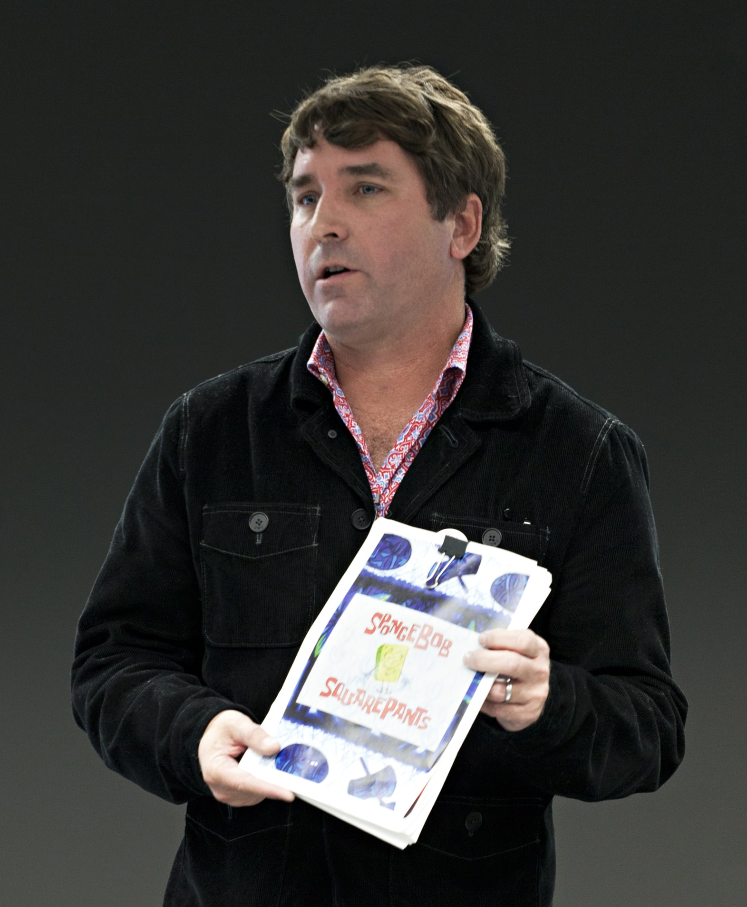

The series follows SpongeBob SquarePants, an energetic and optimistic sea sponge who lives in a submerged pineapple, and his aquatic friends. SpongeBob has a childlike enthusiasm for life, which carries over to his job as a fry cook at a fast food restaurant, the Krusty Krab. One of his goals is to obtain a boat-driving license from Mrs. Puff's Boating School, but he never succeeds. His favorite pastimes include "jellyfishing", which involves catching jellyfish with a net in a manner similar to butterfly catching, and blowing soap bubbles into elaborate shapes. He has a pet sea snail with a pink shell and a blue body named Gary, who meows like a cat.
All text in this website has been cited directly from the Wikipedia page on Spongebob Squarepants, which the exception of the characters section, which was cited in my own words.
